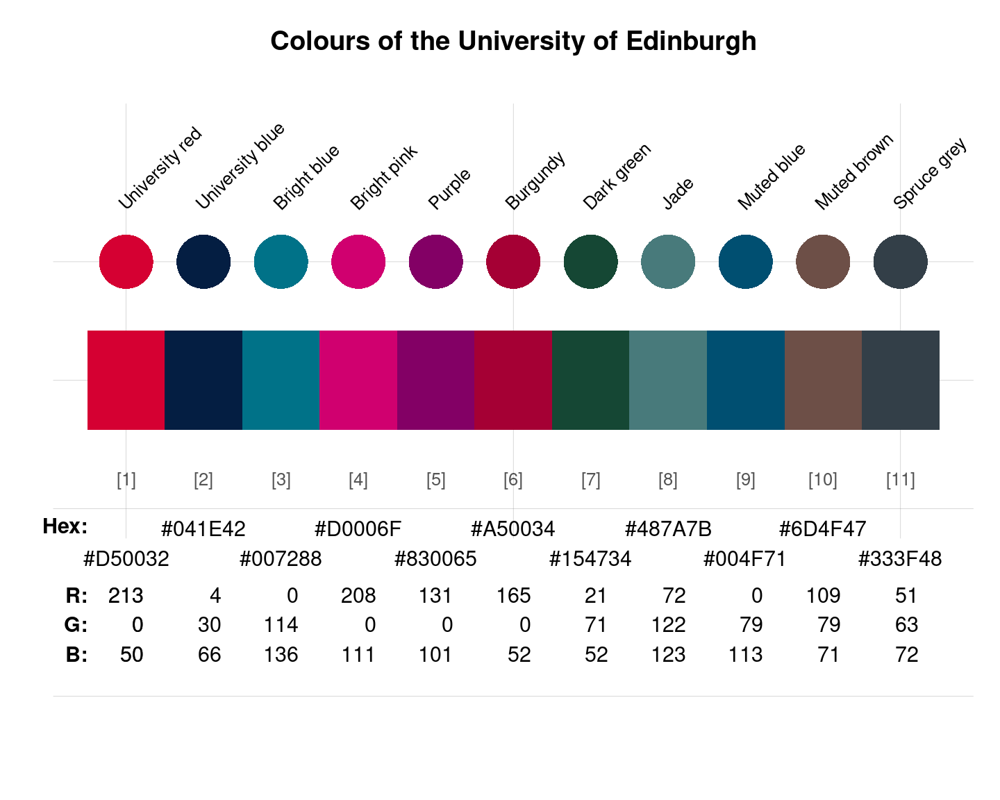

edinburgh provides the eleven primary colours
of the University of Edinburgh, Scotland, UK.
Source
Color definitions are based on Edinburgh's Colour theming page.
Details
The 11 primary colours are
"University red" (defined as HEX D50032, or RGB 213 0 50),
"University blue" (defined as HEX 041E42, RGB 4 30 66),
"Bright blue" (defined as HEX 007288, RGB 0 114 136),
"Bright pink" (defined as HEX D0006F, RGB 208 0 111),
"Purple" (defined as HEX 830065, RGB 131 0 101),
"Burgundy" (defined as HEX A50034, RGB 165 0 52),
"Dark green" (defined as HEX 154734, RGB 21 71 52),
"Jade" (defined as HEX 487A7B, RGB 72 122 123),
"Muted blue" (defined as HEX 004F71, RGB 0 79 113),
"Muted brown" (defined as HEX 6D4F47, RGB 109 79 71), and
"Spuce grey" (defined as HEX 333F48, RGB 51 63 72).
edinburgh uses the HEX color definitions.
The University colour themes are derived from the full set of official corporate colour palettes. The full range of colour palettes were reviewed for online use and a selection of the best have been added to EdGEL.
By using the supported colour palettes you will ensure that our websites remain on brand and accessible. Colour choices automatically cascade across all relevant aspects of the website design so you don’t have to worry about inconsistencies.
There are a total of 11 available colour palettes. Do not introduce colour themes beyond this approved selection. Only one corporate colour can be used on a page.
See also
seecol for viewing and comparing color palettes;
usecol for using color palettes;
simcol for finding similar colours;
newpal for defining new color palettes;
grepal for finding named colours.
Other Scottish university color palettes:
dundee_background,
dundee_block,
dundee_core,
dundee_highlight,
standrews_1,
standrews_2,
stirling_1,
stirling_2,
stirling_3
Examples
edinburgh
#> University red University blue Bright blue Bright pink Purple
#> "#D50032" "#041E42" "#007288" "#D0006F" "#830065"
#> Burgundy Dark green Jade Muted blue Muted brown
#> "#A50034" "#154734" "#487A7B" "#004F71" "#6D4F47"
#> Spruce grey
#> "#333F48"
unikn::seecol(edinburgh, main = "Colours of the University of Edinburgh") # view palette
